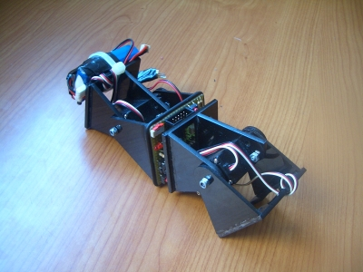
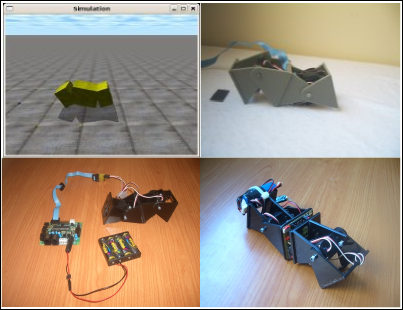

Está lista la primera versión de Minicube-I que es autónoma, con toda la electrónica y la alimentación integrada en el propio robot.
Breve descripción del robot:
Aquí está el robot en acción:

En esta demostración sólo se muestra un tipo de locomoción, con los parámetros de los osciladores fijados a:
Variándolos, el robot cambia el modo de caminar.
Evolución
En mi tesis he estudiado los algoritmos de locomoción de los robots ápodos, centrándome en resolver el problema de la coordinación.
Para validar estos algoritmos, realicé simulaciones (entrada en el blog) y construí robots modulares controlados desde el PC (ver entrada sobre minicube-1)
Con la tesis demostré que los algoritmos basados en osciladores sinusoidales son viables. El siguiente paso era implementarlos para lograr robots modulares autónomos, que no necesitasen conectarse al pc para moverse.

Los osciladores los implementé para la Skypic. En las primeras pruebas sólo hacía oscilar un servo (ver entrada) y luego moví Minicube-I (ver entrada) y Cube-M (ver entrada). Estos robots sí son autónomos (no se conectan al PC) pero tanto la electrónica como las baterías estaban situadas en el exterior.
El último paso ha sido construir la tarjeta Skycube e integrarla en los módulos y1 (ver entrada). Y gracias a Ricardo Gómez, las pilas se han sustituido por la baterías de Li-Po actuales.
Trabajo futuro
Aunque esta prueba se ha realizado con Minicube-i, tanto la electrónica como los algoritmos son escalables y por tanto permiten mover robots de mayor longitud. El siguiente paso será hacer el PCB de la Skycube, para poder replicarla fácilmente y usarla con robots mayores. Será necesario, también, hacer el firmware para mover servos a través del bus I2C.
Sin duda es un hito histórico 🙂 la teoría de cuerdas quedará corta para el potencial de estos ladrillos cibernéticos.
¿Cómo piensas resolver la comunicación entre módulos?, ¿qué tal un protocolo similar a un sistema nervioso dinámico que facilite la suerte de una evolución? Por ejemplo por vía inalámbrica a una red corporal de muy baja potencia (residuales electromagnéticos); aunque mejor propongo una vía por fibra óptica que a la vez sirve de sensor.
Chris.
Hola Chris!
De momento la comunicación será mucho más “mundana”. Un bus I2C para empezar. Pero todo llegará…. pasito a pasito 😉
Juan, te ha quedado genial y supercompacto. Enhorabuena!!!
Un abrazo
Gracias Alejandro!! Es mucho mejor verlo en directo 😉 Cuando nos veamos te lo enseño, y de paso nos actualizamos de todas las novedades
JUAN ES UN EXCELENTE TRABAJO FELICITACIONES.
ME GUSTARIA COMO HACER UNO, PARA ENSEÑALO A MIS ALUMNOS.
LA TARJETA DONDE SE PUEDE CONSEGUIR O DE QUE MODO
GRACIAS ESPERO ME ENVIES POR FAVOR INFORMACION.
Hola Alejandro,
La tarjeta Skycube está en fase de prototipo y todavía no está terminada, estamos en ello 🙂 Pero en el repositorio puedes descargarte los últimos planos. En el blog iremos publicando los avances